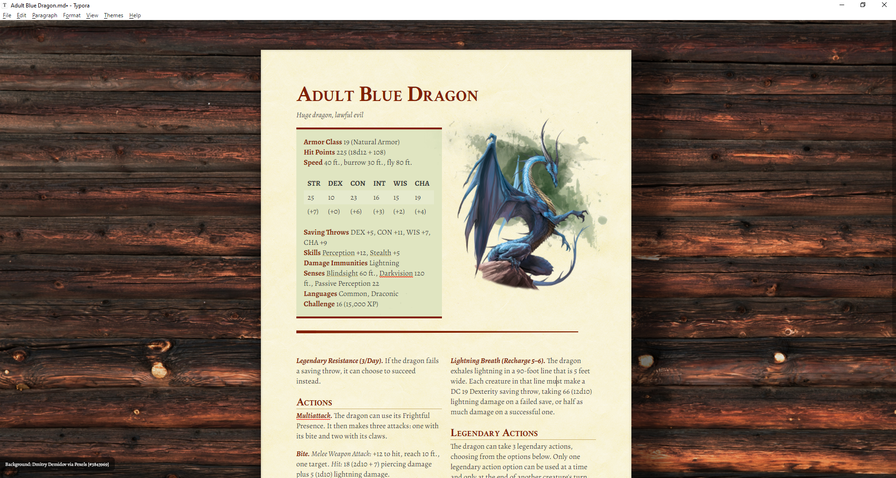

Torillic came out of me wanting to use markdown to write notes for my TTRPG campaigns; I'd found the markdown editor Typora and loved that it lets you write your own custom themes in CSS, so I set about making something which looks like the official resources for Dungeons & Dragons.
You can view/download the Typora theme here, below are some previews of how it looks in Typora:
